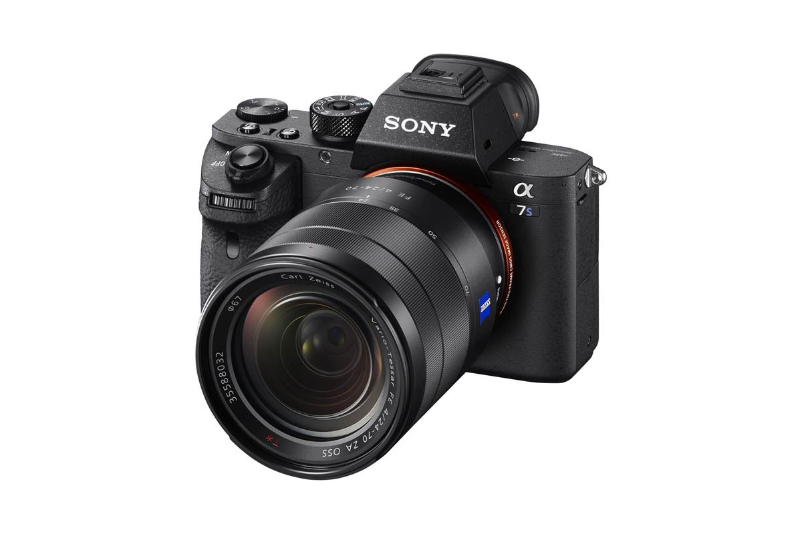
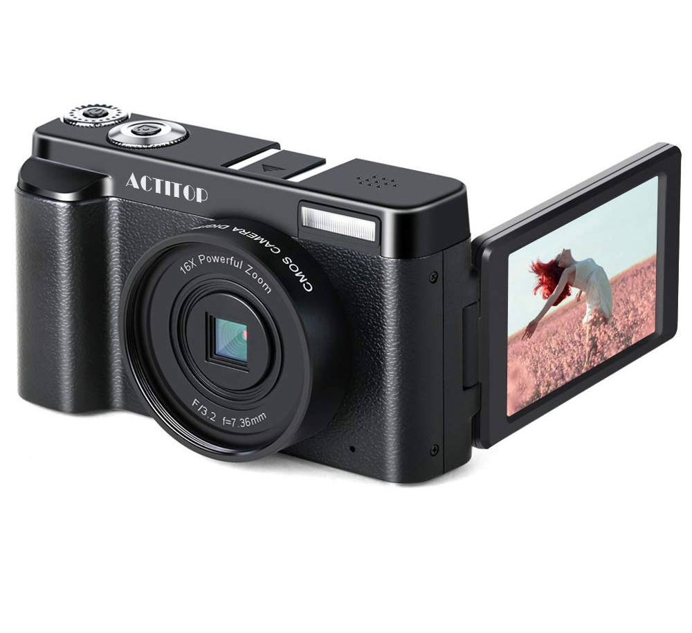

Les Reflexes
Il s'agit d'une catégorie d'appareils photo qui
tirent leur nom d'un mécanisme de visée commun. À l'intérieur de
l'appareil, un miroir positionné à 45° réfléchit la lumière issue de l'objectif vers un système optique qui formera
l'image visible par le photographe. C'est le seul et unique critère qui fait qu'un reflex est un reflex !
Cette définition a de nombreuses implications très intéressantes. Par exemple, les boîtiers SLT de Sony,
bien qu'ayant un viseur électronique et un miroir translucide, sont bel et bien des reflex, n'en déplaise à ceux qui prétexteront
qu'il n'a pas de viseur optique. De même, et dans une autre catégorie, les appareils Hasselblad de la gamme
H et V sont bel et bien des reflex, puisqu'ils intègrent un miroir. Et pourtant, ils n'ont pas forcément de viseur pentaprisme/pentamiroir (qui est un accessoire),
comme on peut le voir sur la prise en main du 503CW publiée sur
Focus Numérique.
Il en va de même pour le Mamyia RZ22 et tous les appareils moyen format du même type. L'image se forme sur un dépoli,
qui est une plaque de verre semi-opaque.
Même lorsque le miroir renvoie l'image vers un viseur optique, cela n'implique pas forcément qu'une bosse sera présente sur le capot de
l'appareil (comme aime bien le rappeler certains vrais-faux connaisseurs). Panasonic, Leica et Olympus l'ont par exemple montré à
travers leurs L1, Digiluix 3et E-330 (respectivement) il y a maintenant plusieurs années. Nous pourrions encore deviser longtemps et
donner d'innombrables exemples, évoquer les Lubitel et Rolleiflex bi-objectifs, mais nous laisserons à votre curiosité le soin de
voyager à travers cet univers fabuleusement riche.
Tout ce qu'il faut retenir est donc que reflex = présence d'un miroir pour viser.

Pourquoi avoir créé les hybrides ?
Pour comprendre les hybrides, il faut remonter dans le temps, quand la photographie était exclusivement argentique.
Bien qu'il existait (et existe toujours) plusieurs formats de pellicules, la plus commune était celle portant le nom de code 135.
C'est le classique film en cartouche, bien connu de tous, équipant aussi bien les appareils jetables que les gros reflex mythiques
(façon Nikon F3), en passant par les infatigables télémétriques (façon Leica M) et génialement minuscules Minox
(dont l'emblématique 35GT).
L'arrivée du numérique à changer la donne
Puisque tout le monde utilisait la même pellicule, seul l'objectif permettait de faire la différence en termes de qualité d'image. Le choix d'un appareil de taille réduite ou non, à objectif interchangeable ou non, dépendait des seuls besoins du photographe. Contrairement à aujourd'hui, il n'y avait pas encore d'association "compact = mauvaise qualité d'image" et "reflex = haute qualité d'image." Autre héritage de l'argentique : le format 24x36mm. S'il est aujourd'hui l'objet de nombreux fantasmes, il correspond à la plus grande image au ratio 3:2 qu'il est possible d'enregistrer sur une pellicule sans que la photo ne déborde en largeur sur les perforations.
Dans les faits, il s'agit d'un format totalement arbitraire, dont la paternité est communément attribuée à Oskar Barnack (inventeur de la photographie moderne). Si l'ingénieur allemand avait préféré le format carré, ou un ratio 4:3, ou un ratio 2:1, tout serait aujourd'hui, différent. Notez également que tous les appareils équipés de film 135 ne prenaient pas des images en 24x36mm. Les Hasselblad X-Pan faisaient du panoramique en 24x65mm et les Olympus Pen F généraient des "demi-photos" en 18x24mm. Pensez-y.
En résumé
Le viseur, basé sur un système à miroir, est la seule différence formelle entre un reflex et un hybride. Ce n'est donc plus une question de qualité d'image, de taille de capteur, de fonctions avancées, de réactivité, de technologie. Nous assistons à un formidable bouillon de culture où les uns empruntent les attributs des autres, où des hybrides génèrent des images plus belles que certains reflex, où des reflex empruntent des technologies défrichées et affinées par les hybrides (comme la détection de phase intégrée au capteur).
Pour le commun des mortels, il n'y a donc plus de différence décisive qui pourrait faire pencher la balance vers l'un ou vers l'autre. Nous vivons une époque formidable de métissage photographique et technologique où, pour une fois, le choix peut se faire avec le cœur plutôt qu'avec la fiche technique. Néanmoins, les habitudes et les préjugés fallacieux ont la vie dure. Certains continueront à préférer les reflex parce qu'ils seraient plus solides, plus fonctionnels, plus "pro", plus modulables, etc.
